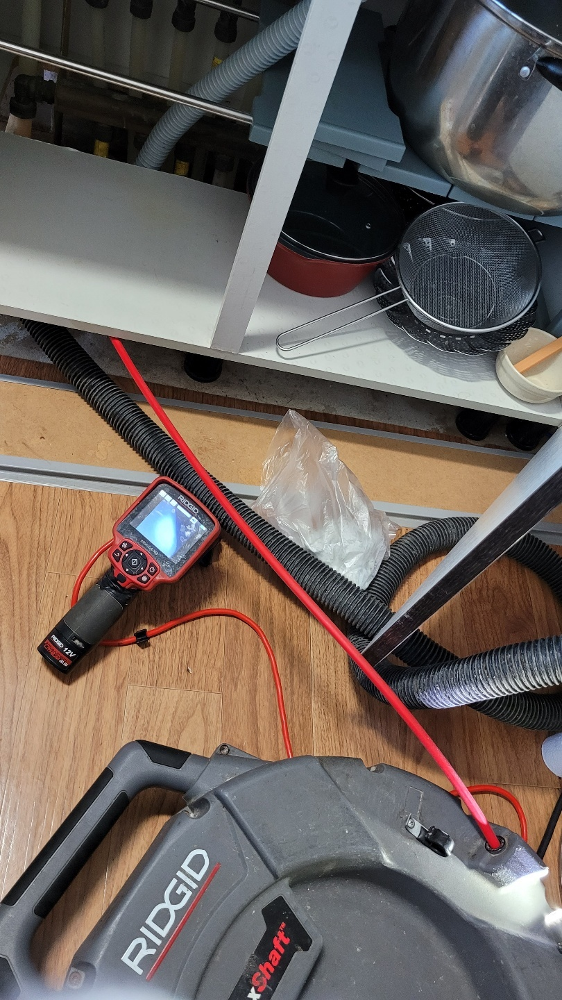
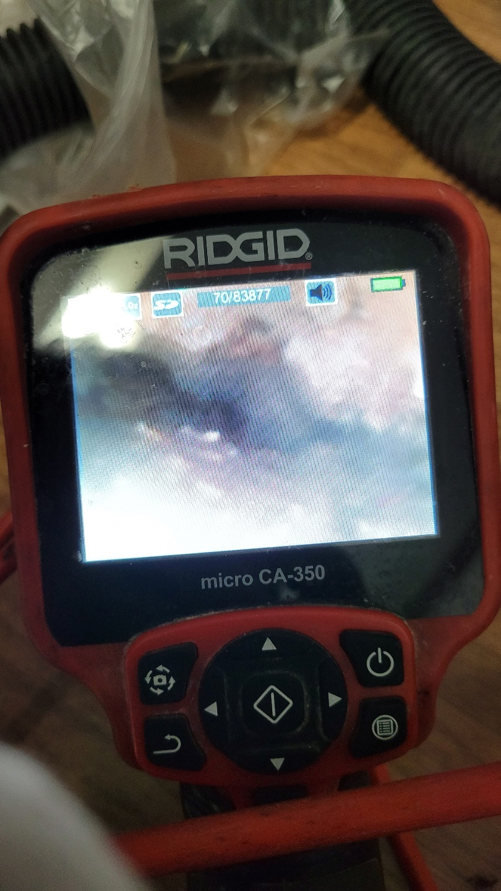
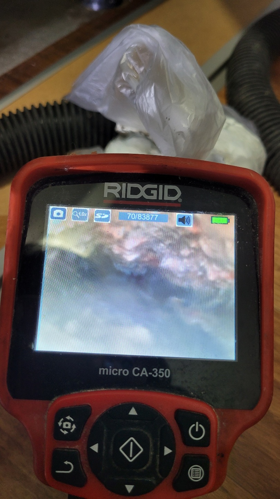
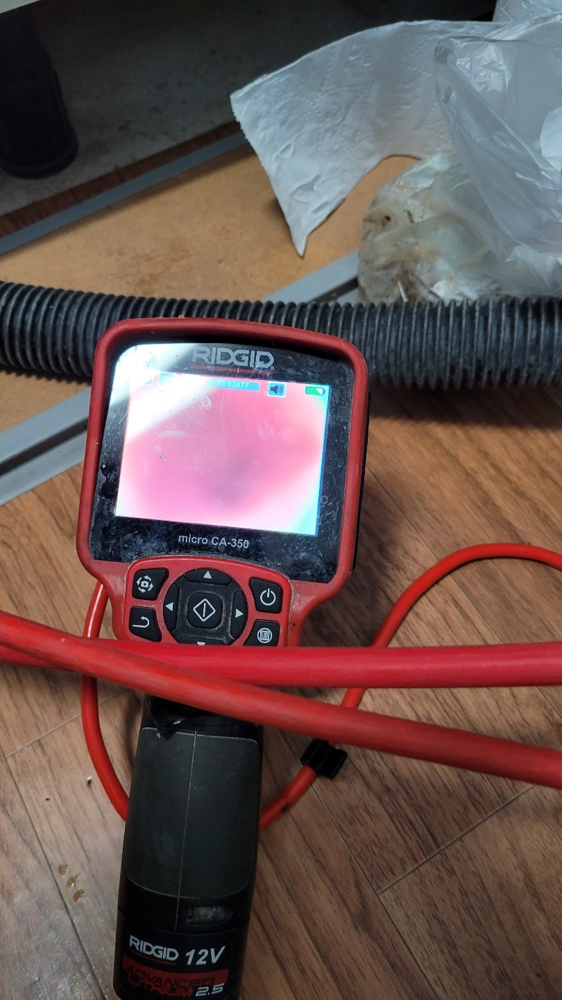

🏠 영통구싱크대막힘 망포동 영통동 내시경검수 제대로 마무리한 현장!
수원 망포동 싱크대막힘 전문 시공 후기

📋 작업 개요
- 위치: 수원 망포동, 망포동, 수원
- 서비스 유형: 싱크대막힘, 하수구막힘, 배관막힘, 맨홀막힘, 역류해결, 고압세척
- 작업 일시: 2022. 12. 15. 11:08
- 업체명: 하수구수사대 (010-5615-2118)
🔍 문제 상황
안녕하세요. 하수구수사대입니다.
생활 속에서 갑작스러운 배관 막힘으로 인해서 당황스러운 경험을 해보신 적이 있으실 것입니다.
이번에 방문을 한 현장은 영통구싱크대막힘 망포동 영통동 내시경검수를 통해서 막힘을 해결했던 곳이었는데요 상가의 주택이다 보니 1층에는 사람이 많이 다니는 편의점이 있고 위층으로도 많은 세대들이 생활을 하고 있는 가정집이었습니다.
영통구싱크대막힘 망포동 영통동 내시경검수를 통해서 어떠한 문제로 하수구막힘이 발생을 하게 되었는지를 자세하게 알려드리도록 하겠습니다. 저희 하수구수사대에서는 고객님의 연락을 받고 우선적으로 일정을 조율해서 바로 달려가곤 합니다. 하수구 막힘의 원인은 현장에 나가서 원인을 파악해 보기 전까지는 어떤 원인으로 인해서 막힘이 발생했는지는 예측을 할 수 없습니다.

🔎 원인 분석
💡 전문가 진단: 생활 속에서 갑작스러운 배관 막힘으로 인해서 당황스러운 경험을 해보신 적이 있으실 것입니다.
그렇기 때문에 현장으로 출동을 할 때는 다양한 최신 장비들을 가지고 방문을 하고 있는데요.
저희 하수구수사대에서는 작업에 필요한 다양한 장비들을 보유하고 있기 때문에 현장의 상황에 따라서 보다 신속하고 정확하게 해결을 할 수 있는 것이 가능합니다. 가장 먼저 배관 내부를 확인해 보기 위해서 하는 작업은 배관 내시경을 이용해서 내부를 살펴보는 것입니다.
영통구싱크대막힘 망포동 영통동 내시경검수를 통해서 이물질들의 위치나 상태를 파악을 할 수 있습니다. 하수구막힘이 발생한 건물 1층의 편의점에서는 이미 역류로 인해서 배관 바닥 주변의 곳곳에 물이 고여있는 모습도 보았습니다.
경기도 수원시 영통구 봉영로 1612 7층 710-A19호
위층에 거주하시는 고객님께서는 이미 여러 번 싱크대와 욕실에서도

🔧 작업 과정
이렇게 막힘이나 역류가 발생하고 있었다고 합니다.
이런 경우에는 아무래도 해당 건물을 통과하는 메인 배관에서 문제가 발생했다는 것을 예상해 볼 수 있는데요 요즘은 다세대주택들이 많은 만큼 메인 배관이 막히게 되면 연쇄적으로 하수구막힘이 발생하게 되는 것입니다.
특히 하수구가 역류를 하게 되면 악취도 심하게 되고 물이 제대로 배수가 되지 않게 되다 보니 불편한 점들이 한두 가지가 아니라고 할 수 있습니다. 그렇기 때문에 보다 신속하게 해결을 해드리기 위해서 열심히 뛰고 있습니다.
원인을 찾아보기 위해서 진행되는 작업인 내시경을 연결해서
문제가 발생했을 것 같은 메인 배관이 있는 맨홀로 연결을 해서 확인을 해보았습니다. 내시경을 이용하게 되면 평상시에 육안으로 보기 어려운 배수관 내부의 상태를 볼 수 있는데요 원인 파악에 따라서 정확히 어떠한 장비로 해결을 할지 판단을 하게 되는 것입니다.
메인 배관을 확인한 결과 오랫동안 쌓인 기름 슬러지 덩어리가 배관의 깊숙한 곳까지 자리를 잡고 있었는데요 고압세척 장비를 이용해서 세척작업을 하기로 하였습니다. 많은 사람들이 동시에 사용을 하고 있던 건물 배관이기 때문에 각종 이물질들이 쌓이게 되면서 배관 막힘이 발생하게 된 것입니다.
이러한 상황을 예방하기 위해서는 평상시에 정기점검과 고압세척을 통해서 관리를 해주시는 것이 필요합니다.


✅ 작업 완료
고압세척 장비를 세팅을 해서 본격적으로 작업을 시작하였는데요. 배관 내시경을 통해서 내부를 확인하면서 오래된 이물질들이 제거될 수 있도록 반복적으로 작업을 하였습니다.
고압세척의 경우에는 배관 내부를 전체적으로 세척을 해주기 때문에 이물질 제거뿐만 아니라 악취 제거도 함께 할 수 있는 장점이 있습니다. 정기적으로 고압세척을 해주면 평소 배관을 관리하는 데에도 더 용이하다고 할 수 있는데요. 이물질이 모두 제거가 되는 것을 확인을 하고 모든 작업을 마무리하였습니다.




⚠️ 주방 싱크대 배관 막힘 예방 수칙
- ✅ 기름기가 묻은 식기나 프라이팬은 설거지 전 키친타올로 반드시 기름때를 닦아내세요.
- ✅ 주기적으로 싱크대 개수대에 뜨거운 물을 가득 받아 한 번에 내려 배관 내부 기름을 씻어내세요.
- ✅ 배수구 거름망을 미세한 필터로 사용하시고 음식물 찌꺼기가 틈으로 새어 들지 않게 관리하세요.
- ✅ 베이킹소다와 식초를 뜨거운 물과 함께 일주일에 한 번씩 부어주면 배관 살균과 막힘 예방에 좋습니다.
💡 핵심 정리
- 확실한 장비 작업(내시경 점검 및 샤프트 스케일링)으로 원인을 뿌리 뽑습니다.
- 작업 후 1년 이내에 동일한 부위 재발 시 100% 무상 A/S 서비스를 보장합니다.
- 서울 · 경기 · 인천 전 지역에 24시간 언제든 긴급 출동할 수 있도록 항시 대기 중입니다.
❓ 자주 묻는 질문 (FAQ)
🚨 수원 망포동 싱크대막힘 문제로 고민이신가요?
정확한 원인 진단과 확실한 시공으로 재발 없는 해결을 약속드립니다.
24시간 긴급 출동 | 서울 · 경기 · 인천 전지역 | 1년 내 재발 시 무상 A/S